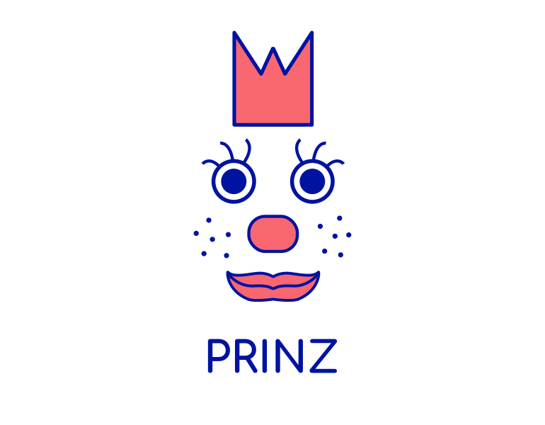

Prinz provides machine learning integrations for Nussknacker.
Useful links:
What is Prinz? [TL;DR]
Prinz is a library of extensions for Nussknacker. Moreover, it also provides an API that allow adding new integrations with model repositories / engines for ML models. For now, it can be assumed that there will be no separate runtime - i.e. a separate application, we assume that the NK library will communicate with the model repositories and retrieve the necessary information / artifacts on an ongoing basis.
In the future, however, it may be needed - e.g. to be able to more easily share some artifacts between different deployments / NK diagrams.
We can distinguish three actors who will have contact with these extensions:
- NK configurator - uses the UI to configure a business scenario using ML models. He does not need to know how the model was made or how it is shared. He has access to a specific item in the NK toolbox and his task is to configure it (define the values of the model features).
- Creator / administrator of the Nussknacker model. He uses the Nussknacker API (ProcessConfigCreator) to integrate NK into the ML system. In code / configuration, he uses the Prinz API implementation for specific ML systems (e.g. MLFlow).
- Developer of new integrations with ML systems. He uses the Prinz API to enable usage for the creators of Nussknacker data models.
In the first step, we assume that the configurator will fill in all the features of the model by himself. However, later we want to partially automate it - i.e. the creator of the Nussknacker model will be able to determine where to get at least some of the data for the model - e.g. from a database with a customer profile, predefined aggregates, etc.